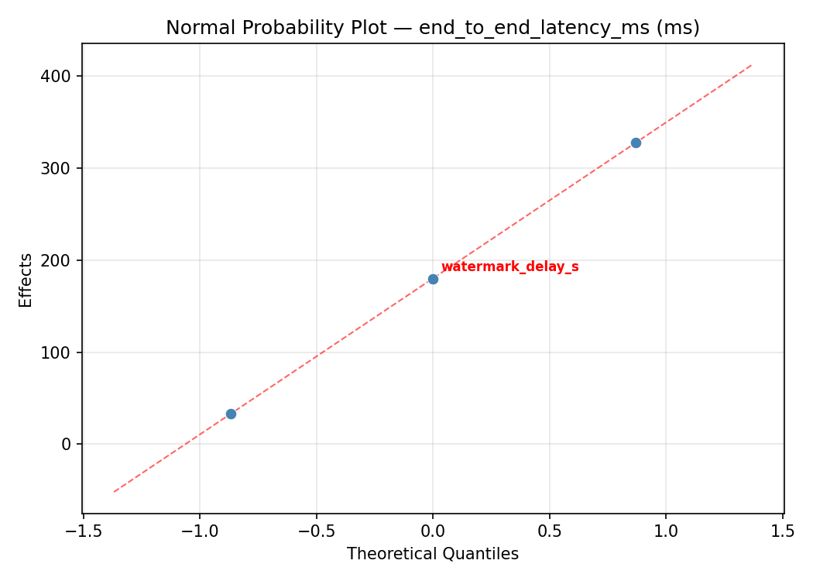
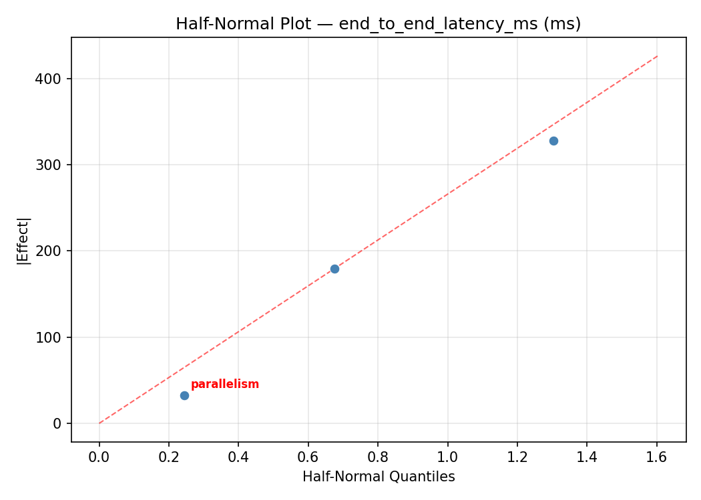
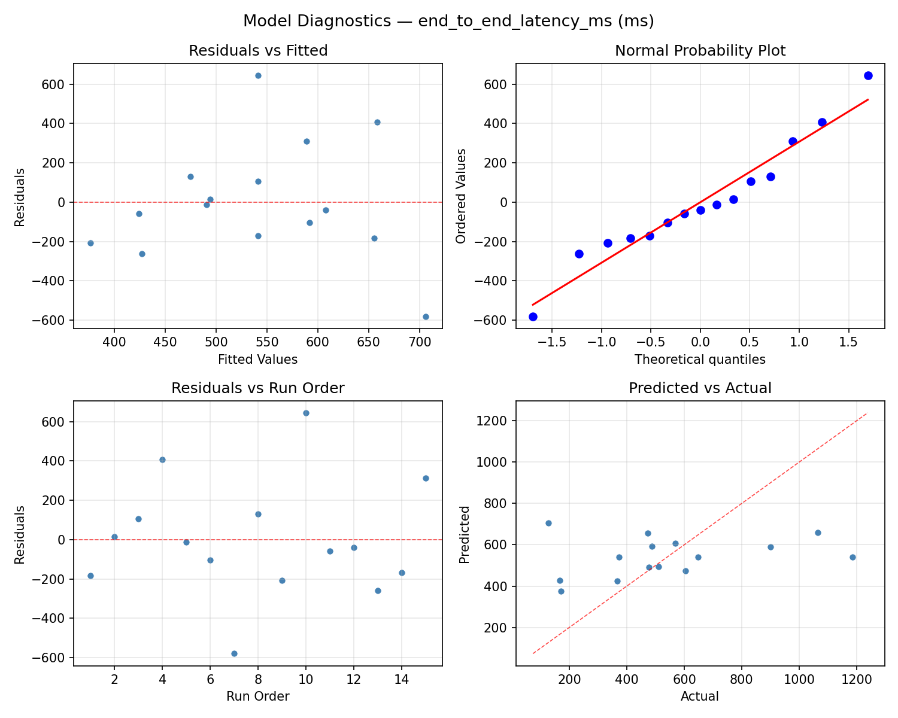
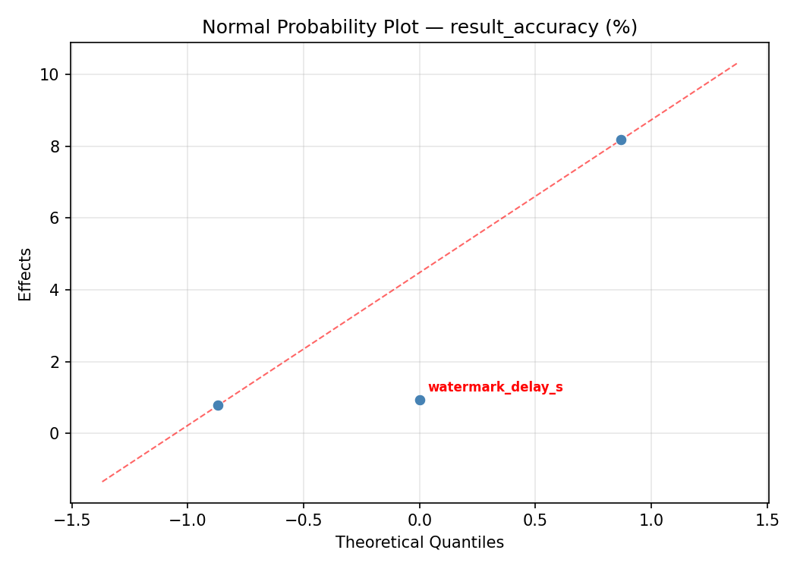
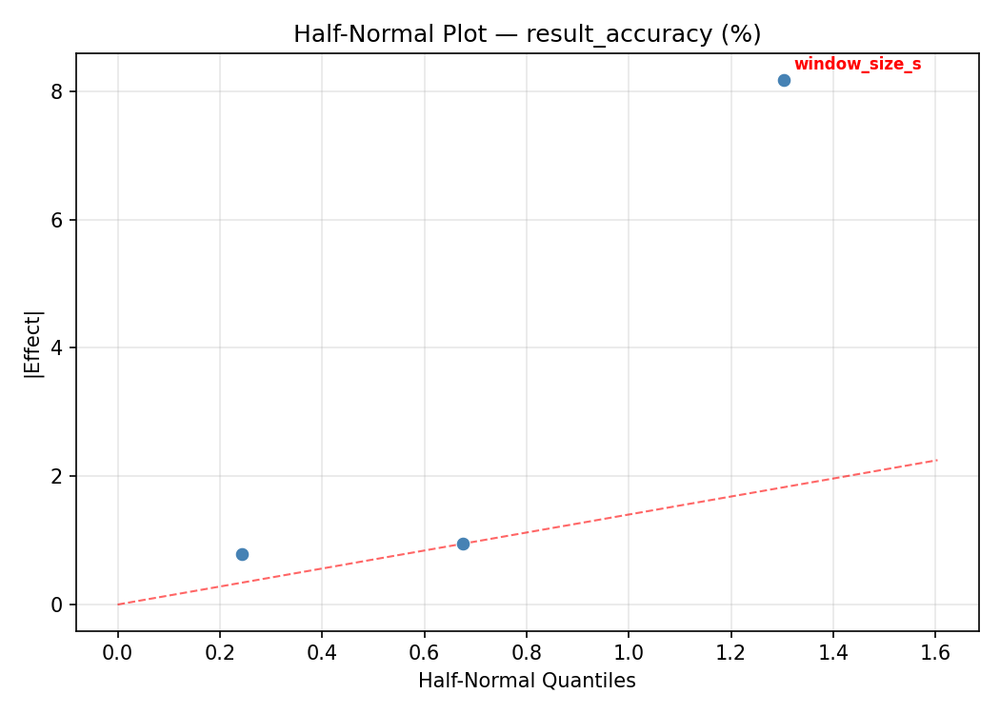
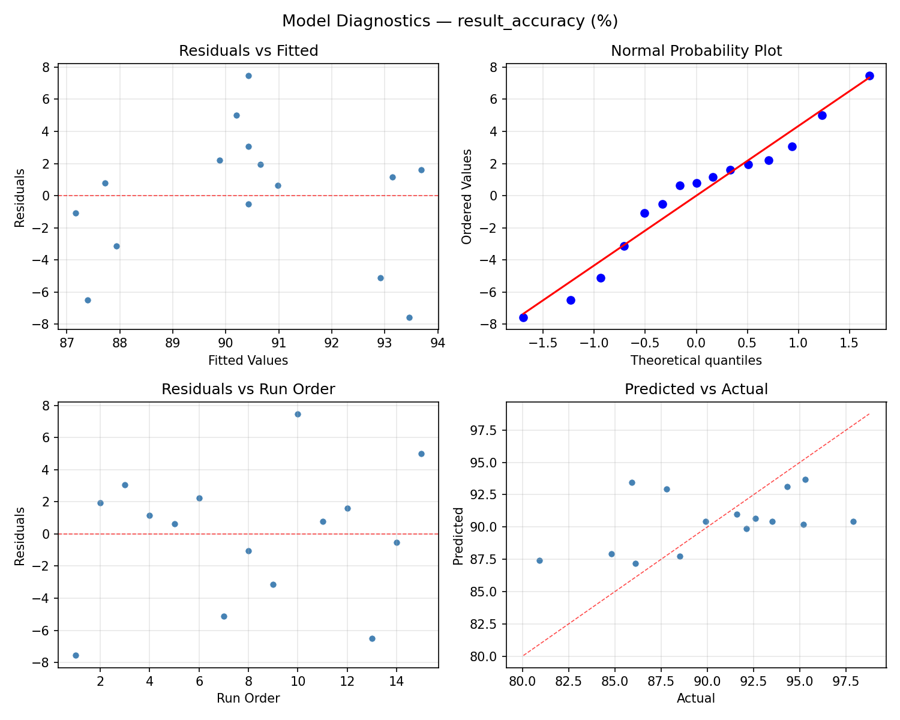

Summary
This experiment investigates stream processing windowing. Box-Behnken design to tune Flink window size, watermark delay, and parallelism for latency and accuracy.
The design varies 3 factors: window size s (s), ranging from 5 to 120, watermark delay s (s), ranging from 1 to 30, and parallelism (slots), ranging from 4 to 32. The goal is to optimize 2 responses: end to end latency ms (ms) (minimize) and result accuracy (%) (maximize). Fixed conditions held constant across all runs include checkpoint interval ms = 10000, state backend = rocksdb.
A Box-Behnken design was chosen because it efficiently fits quadratic models with 3 continuous factors while avoiding extreme corner combinations — requiring only 15 runs instead of the 8 needed for a full factorial at two levels.
Quadratic response surface models were fitted to capture potential curvature and factor interactions. The RSM contour plots below visualize how pairs of factors jointly affect each response.
Key Findings
For end to end latency ms, the most influential factors were watermark delay s (41.9%), parallelism (33.6%), window size s (24.5%). The best observed value was 126.0 (at window size s = 62.5, watermark delay s = 15.5, parallelism = 18).
For result accuracy, the most influential factors were watermark delay s (54.6%), parallelism (24.4%), window size s (21.1%). The best observed value was 97.9 (at window size s = 120, watermark delay s = 15.5, parallelism = 4).
Recommended Next Steps
- Run confirmation experiments at the predicted optimal settings to validate the model.
- Consider whether any fixed factors should be varied in a future study.
Experimental Setup
Factors
| Factor | Low | High | Unit |
|---|
window_size_s | 5 | 120 | s |
watermark_delay_s | 1 | 30 | s |
parallelism | 4 | 32 | slots |
Fixed: checkpoint_interval_ms = 10000, state_backend = rocksdb
Responses
| Response | Direction | Unit |
|---|
end_to_end_latency_ms | ↓ minimize | ms |
result_accuracy | ↑ maximize | % |
Configuration
{
"metadata": {
"name": "Stream Processing Windowing",
"description": "Box-Behnken design to tune Flink window size, watermark delay, and parallelism for latency and accuracy"
},
"factors": [
{
"name": "window_size_s",
"levels": [
"5",
"120"
],
"type": "continuous",
"unit": "s"
},
{
"name": "watermark_delay_s",
"levels": [
"1",
"30"
],
"type": "continuous",
"unit": "s"
},
{
"name": "parallelism",
"levels": [
"4",
"32"
],
"type": "continuous",
"unit": "slots"
}
],
"fixed_factors": {
"checkpoint_interval_ms": "10000",
"state_backend": "rocksdb"
},
"responses": [
{
"name": "end_to_end_latency_ms",
"optimize": "minimize",
"unit": "ms"
},
{
"name": "result_accuracy",
"optimize": "maximize",
"unit": "%"
}
],
"settings": {
"operation": "box_behnken",
"test_script": "use_cases/39_stream_processing_windowing/sim.sh"
}
}
Experimental Matrix
The Box-Behnken Design produces 15 runs. Each row is one experiment with specific factor settings.
| Run | window_size_s | watermark_delay_s | parallelism |
|---|
| 1 | 62.5 | 1 | 4 |
| 2 | 62.5 | 15.5 | 18 |
| 3 | 120 | 15.5 | 32 |
| 4 | 120 | 15.5 | 4 |
| 5 | 62.5 | 15.5 | 18 |
| 6 | 62.5 | 15.5 | 18 |
| 7 | 5 | 15.5 | 32 |
| 8 | 120 | 1 | 18 |
| 9 | 62.5 | 1 | 32 |
| 10 | 120 | 30 | 18 |
| 11 | 5 | 15.5 | 4 |
| 12 | 62.5 | 30 | 32 |
| 13 | 5 | 1 | 18 |
| 14 | 5 | 30 | 18 |
| 15 | 62.5 | 30 | 4 |
Step-by-Step Workflow
1
Preview the design
$ python doe.py info --config use_cases/39_stream_processing_windowing/config.json
2
Generate the runner script
$ python doe.py generate --config use_cases/39_stream_processing_windowing/config.json \
--output use_cases/39_stream_processing_windowing/results/run.sh --seed 42
3
Execute the experiments
$ bash use_cases/39_stream_processing_windowing/results/run.sh
4
Analyze results
$ python doe.py analyze --config use_cases/39_stream_processing_windowing/config.json
5
Get optimization recommendations
$ python doe.py optimize --config use_cases/39_stream_processing_windowing/config.json
6
Multi-objective optimization
With 2 competing responses, use --multi to find the best compromise via Derringer–Suich desirability.
$ python doe.py optimize --config use_cases/39_stream_processing_windowing/config.json --multi
7
Generate the HTML report
$ python doe.py report --config use_cases/39_stream_processing_windowing/config.json \
--output use_cases/39_stream_processing_windowing/results/report.html
Features Exercised
| Feature | Value |
|---|
| Design type | box_behnken |
| Factor types | continuous (all 3) |
| Arg style | double-dash |
| Responses | 2 (end_to_end_latency_ms ↓, result_accuracy ↑) |
| Total runs | 15 |
Analysis Results
Generated from actual experiment runs using the DOE Helper Tool.
Response: end_to_end_latency_ms
Top factors: watermark_delay_s (41.9%), parallelism (33.6%), window_size_s (24.5%).
ANOVA
| Source | DF | SS | MS | F | p-value |
|---|
| Source | DF | SS | MS | F | p-value |
| window_size_s | 2 | 71703.8333 | 35851.9167 | 0.116 | 0.8915 |
| watermark_delay_s | 2 | 175706.4048 | 87853.2024 | 0.285 | 0.7590 |
| parallelism | 2 | 130860.6190 | 65430.3095 | 0.213 | 0.8129 |
| Lack | of | Fit | 6 | 362863.8095 | 60477.3016 |
| Pure | Error | 2 | 615570.6667 | | |
| Error | 8 | 978434.4762 | 307785.3333 | | |
| Total | 14 | 1356705.3333 | 96907.5238 | | |
Pareto Chart

Main Effects Plot

Normal Probability Plot of Effects

Half-Normal Plot of Effects

Model Diagnostics

Response: result_accuracy
Top factors: watermark_delay_s (54.6%), parallelism (24.4%), window_size_s (21.1%).
ANOVA
| Source | DF | SS | MS | F | p-value |
|---|
| Source | DF | SS | MS | F | p-value |
| window_size_s | 2 | 13.4372 | 6.7186 | 0.237 | 0.7947 |
| watermark_delay_s | 2 | 69.7933 | 34.8966 | 1.229 | 0.3425 |
| parallelism | 2 | 17.8833 | 8.9416 | 0.315 | 0.7386 |
| Lack | of | Fit | 6 | 150.3290 | 25.0548 |
| Pure | Error | 2 | 56.8067 | | |
| Error | 8 | 207.1356 | 28.4033 | | |
| Total | 14 | 308.2493 | 22.0178 | | |
Pareto Chart

Main Effects Plot

Normal Probability Plot of Effects

Half-Normal Plot of Effects

Model Diagnostics

Response Surface Plots
3D surfaces fitted with quadratic RSM. Red dots are observed data points.
end to end latency ms watermark delay s vs parallelism

end to end latency ms window size s vs parallelism

end to end latency ms window size s vs watermark delay s

result accuracy watermark delay s vs parallelism

result accuracy window size s vs parallelism

result accuracy window size s vs watermark delay s

Multi-Objective Optimization
When responses compete, Derringer–Suich desirability finds the best compromise.
Each response is scaled to a 0–1 desirability, then combined via a weighted geometric mean.
Overall Desirability
D = 0.7094
Per-Response Desirability
| Response | Weight | Desirability | Predicted | Dir |
|---|
end_to_end_latency_ms |
1.0 |
|
568.00 0.5755 568.00 ms |
↓ |
result_accuracy |
1.5 |
|
95.30 0.8155 95.30 % |
↑ |
Recommended Settings
| Factor | Value |
|---|
window_size_s | 120 s |
watermark_delay_s | 15.5 s |
parallelism | 4 slots |
Source: from observed run #12
Trade-off Summary
Sacrifice = how much worse than single-objective best.
| Response | Predicted | Best Observed | Sacrifice |
|---|
result_accuracy | 95.30 | 97.90 | +2.60 |
Top 3 Runs by Desirability
| Run | D | Factor Settings |
|---|
| #2 | 0.6524 | window_size_s=62.5, watermark_delay_s=1, parallelism=32 |
| #6 | 0.6443 | window_size_s=62.5, watermark_delay_s=30, parallelism=4 |
Model Quality
| Response | R² | Type |
|---|
result_accuracy | 0.0390 | linear |
Full Multi-Objective Output
============================================================
MULTI-OBJECTIVE OPTIMIZATION
Method: Derringer-Suich Desirability Function
============================================================
Overall desirability: D = 0.7094
Response Weight Desirability Predicted Direction
---------------------------------------------------------------------
end_to_end_latency_ms 1.0 0.5755 568.00 ms ↓
result_accuracy 1.5 0.8155 95.30 % ↑
Recommended settings:
window_size_s = 120 s
watermark_delay_s = 15.5 s
parallelism = 4 slots
(from observed run #12)
Trade-off summary:
end_to_end_latency_ms: 568.00 (best observed: 126.00, sacrifice: +442.00)
result_accuracy: 95.30 (best observed: 97.90, sacrifice: +2.60)
Model quality:
end_to_end_latency_ms: R² = 0.0720 (linear)
result_accuracy: R² = 0.0390 (linear)
Top 3 observed runs by overall desirability:
1. Run #12 (D=0.7094): window_size_s=120, watermark_delay_s=15.5, parallelism=4
2. Run #2 (D=0.6524): window_size_s=62.5, watermark_delay_s=1, parallelism=32
3. Run #6 (D=0.6443): window_size_s=62.5, watermark_delay_s=30, parallelism=4
Full Analysis Output
=== Main Effects: end_to_end_latency_ms ===
Factor Effect Std Error % Contribution
--------------------------------------------------------------
watermark_delay_s 286.0000 80.3772 41.9%
parallelism 229.5000 80.3772 33.6%
window_size_s 167.2500 80.3772 24.5%
=== ANOVA Table: end_to_end_latency_ms ===
Source DF SS MS F p-value
-----------------------------------------------------------------------------
window_size_s 2 71703.8333 35851.9167 0.116 0.8915
watermark_delay_s 2 175706.4048 87853.2024 0.285 0.7590
parallelism 2 130860.6190 65430.3095 0.213 0.8129
Lack of Fit 6 362863.8095 60477.3016 0.196 0.9490
Pure Error 2 615570.6667 307785.3333
Error 8 978434.4762 307785.3333
Total 14 1356705.3333 96907.5238
=== Summary Statistics: end_to_end_latency_ms ===
window_size_s:
Level N Mean Std Min Max
------------------------------------------------------------
120 4 531.7500 124.4304 366.0000 647.0000
5 4 651.2500 407.9774 167.0000 1065.0000
62.5 7 484.0000 351.0024 126.0000 1186.0000
watermark_delay_s:
Level N Mean Std Min Max
------------------------------------------------------------
1 4 371.7500 144.0795 170.0000 478.0000
15.5 7 571.7143 386.0418 126.0000 1186.0000
30 4 657.7500 273.5890 488.0000 1065.0000
parallelism:
Level N Mean Std Min Max
------------------------------------------------------------
18 7 585.4286 390.2520 126.0000 1186.0000
32 4 617.5000 196.8239 478.0000 900.0000
4 4 388.0000 255.5034 167.0000 647.0000
=== Main Effects: result_accuracy ===
Factor Effect Std Error % Contribution
--------------------------------------------------------------
watermark_delay_s 5.8750 1.2116 54.6%
parallelism 2.6250 1.2116 24.4%
window_size_s 2.2679 1.2116 21.1%
=== ANOVA Table: result_accuracy ===
Source DF SS MS F p-value
-----------------------------------------------------------------------------
window_size_s 2 13.4372 6.7186 0.237 0.7947
watermark_delay_s 2 69.7933 34.8966 1.229 0.3425
parallelism 2 17.8833 8.9416 0.315 0.7386
Lack of Fit 6 150.3290 25.0548 0.882 0.6177
Pure Error 2 56.8067 28.4033
Error 8 207.1356 28.4033
Total 14 308.2493 22.0178
=== Summary Statistics: result_accuracy ===
window_size_s:
Level N Mean Std Min Max
------------------------------------------------------------
120 4 90.1750 3.4808 86.1000 93.5000
5 4 89.0750 6.8733 80.9000 95.2000
62.5 7 91.3429 4.4109 84.8000 97.9000
watermark_delay_s:
Level N Mean Std Min Max
------------------------------------------------------------
1 4 87.7000 3.0277 84.8000 91.6000
15.5 7 90.1857 5.8356 80.9000 97.9000
30 4 93.5750 1.4863 92.1000 95.3000
parallelism:
Level N Mean Std Min Max
------------------------------------------------------------
18 7 90.9857 4.1787 85.9000 97.9000
32 4 91.2500 3.7846 86.1000 95.2000
4 4 88.6250 6.8951 80.9000 95.3000
Optimization Recommendations
=== Optimization: end_to_end_latency_ms ===
Direction: minimize
Best observed run: #7
window_size_s = 62.5
watermark_delay_s = 15.5
parallelism = 18
Value: 126.0
RSM Model (linear, R² = 0.0990, Adj R² = -0.1468):
Coefficients:
intercept +541.3333
window_size_s +83.0000
watermark_delay_s +46.6250
parallelism -87.8750
RSM Model (quadratic, R² = 0.4811, Adj R² = -0.4530):
Coefficients:
intercept +325.3333
window_size_s +83.0000
watermark_delay_s +46.6250
parallelism -87.8750
window_size_s*watermark_delay_s -39.7500
window_size_s*parallelism -146.2500
watermark_delay_s*parallelism +21.5000
window_size_s^2 -64.6667
watermark_delay_s^2 +198.5833
parallelism^2 +271.0833
Curvature analysis:
parallelism coef=+271.0833 convex (has a minimum)
watermark_delay_s coef=+198.5833 convex (has a minimum)
window_size_s coef=-64.6667 concave (has a maximum)
Notable interactions:
window_size_s*parallelism coef=-146.2500 (antagonistic)
window_size_s*watermark_delay_s coef=-39.7500 (antagonistic)
watermark_delay_s*parallelism coef=+21.5000 (synergistic)
Predicted optimum (from linear model, at observed points):
window_size_s = 120
watermark_delay_s = 15.5
parallelism = 4
Predicted value: 712.2083
Surface optimum (via L-BFGS-B, linear model):
window_size_s = 5
watermark_delay_s = 1
parallelism = 32
Predicted value: 323.8333
Model quality: Weak fit — consider adding center points or using a different design.
Factor importance:
1. parallelism (effect: 349.4, contribution: 45.9%)
2. watermark_delay_s (effect: 230.5, contribution: 30.3%)
3. window_size_s (effect: 181.2, contribution: 23.8%)
=== Optimization: result_accuracy ===
Direction: maximize
Best observed run: #10
window_size_s = 120
watermark_delay_s = 15.5
parallelism = 4
Value: 97.9
RSM Model (linear, R² = 0.1443, Adj R² = -0.0891):
Coefficients:
intercept +90.4267
window_size_s +0.6000
watermark_delay_s -0.6000
parallelism -2.2000
RSM Model (quadratic, R² = 0.7809, Adj R² = 0.3865):
Coefficients:
intercept +89.7667
window_size_s +0.6000
watermark_delay_s -0.6000
parallelism -2.2000
window_size_s*watermark_delay_s -2.5750
window_size_s*parallelism -3.9250
watermark_delay_s*parallelism +0.2250
window_size_s^2 -3.5708
watermark_delay_s^2 +3.5792
parallelism^2 +1.2292
Curvature analysis:
watermark_delay_s coef=+3.5792 convex (has a minimum)
window_size_s coef=-3.5708 concave (has a maximum)
parallelism coef=+1.2292 convex (has a minimum)
Notable interactions:
window_size_s*parallelism coef=-3.9250 (antagonistic)
window_size_s*watermark_delay_s coef=-2.5750 (antagonistic)
Predicted optimum (from quadratic model, at observed points):
window_size_s = 62.5
watermark_delay_s = 1
parallelism = 4
Predicted value: 97.6000
Surface optimum (via L-BFGS-B, quadratic model):
window_size_s = 119.665
watermark_delay_s = 1
parallelism = 4
Predicted value: 101.1293
Model quality: Good fit — general trends are captured, some noise remains.
Factor importance:
1. window_size_s (effect: 4.5, contribution: 34.0%)
2. parallelism (effect: 4.4, contribution: 33.2%)
3. watermark_delay_s (effect: 4.3, contribution: 32.8%)